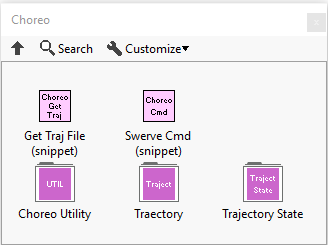
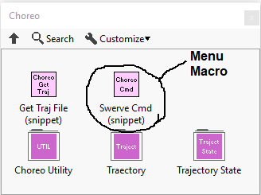
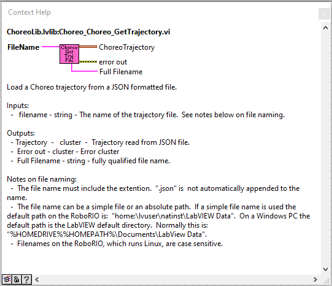
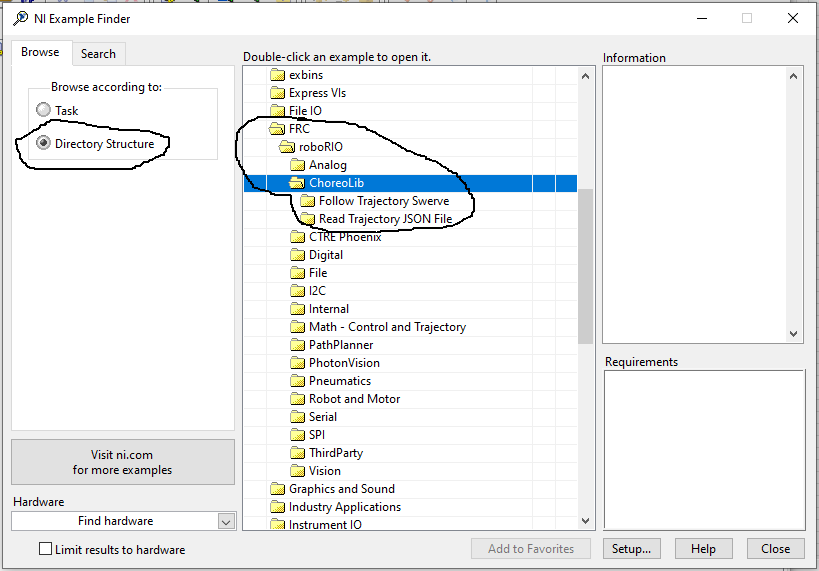

The library has an extensive set of examples that can be found under the LabVIEW "Find examples..." menu.
The library source code, package build specifications, and test package can be found here https://github.com/jsimpso81/ChoreoLibLabVIEW
The ChoreoLib LabVIEW library provides utility functions to read, sample, and follow Choreo trajectories.
The library source code, package build specifications, and test package can be found here https://github.com/jsimpso81/ChoreoLabVIEW
A Choreo function palette contains the Choreo functions and type definitions. This palette can be accessed from the WPI Robotics Library Third Party pallete.

Some of the menu items place “snippets” of code into a VI. These “macros” can greatly speed up development by placing large sections of mostly completed code in a VI. Usually macros have a different color menu palette icon and may contain “(snippet)” in the description.

Each VI includes help that can be accessed using the standard LabVIEW help toggle (Ctrl H).

Many of the functions have examples that can be found under the LabVIEW "Find examples..." function. (Help -> Find Examples...). The function examples are easiest to find when "Directory Structure" is selected.
